Speech-to-text for macOS and Linux, built for Hindi + English.
Fast, free, and open source.
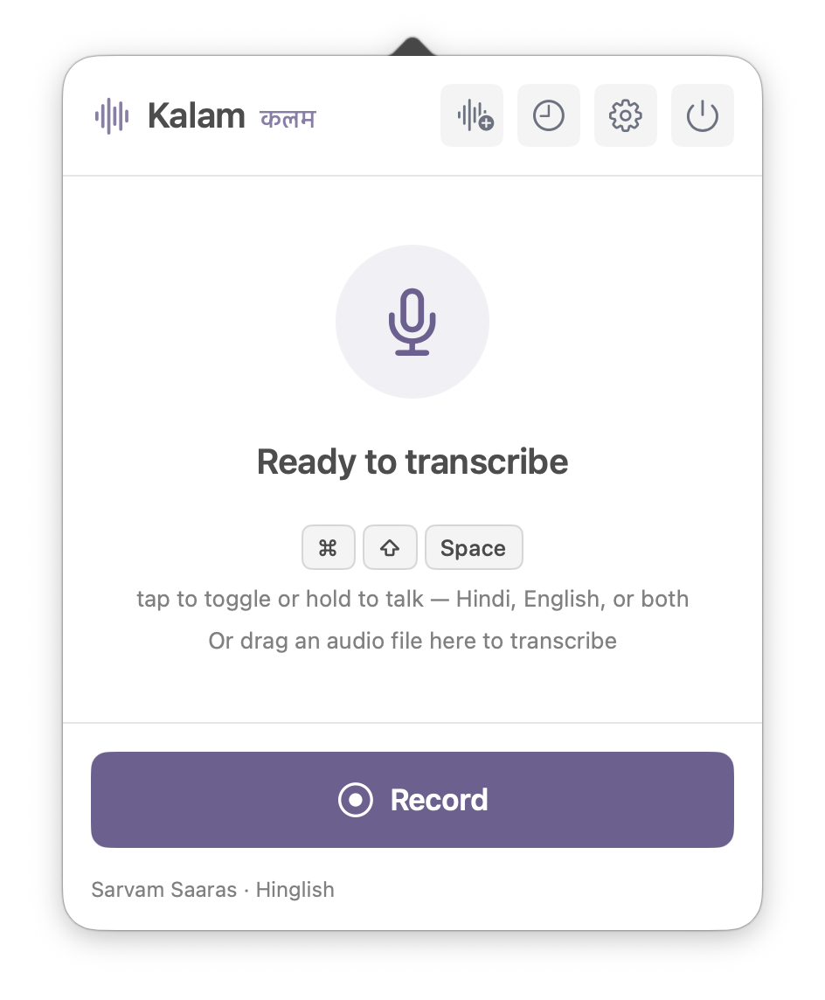
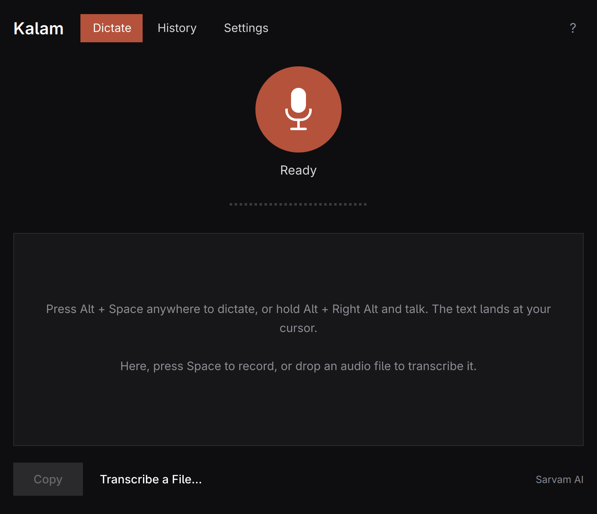
Prefer toggling? Tap the hotkey to start, tap again to stop. A floating indicator shows elapsed time while you record.
Prefer toggling? Press Alt+Space to start and again to stop. These are Omarchy's own dictation keys, so you change them in Omarchy's keybindings.
Speak, review the result, and find it again later without leaving the menu bar.
Speak, review the result, and find it again later, all from the keyboard.
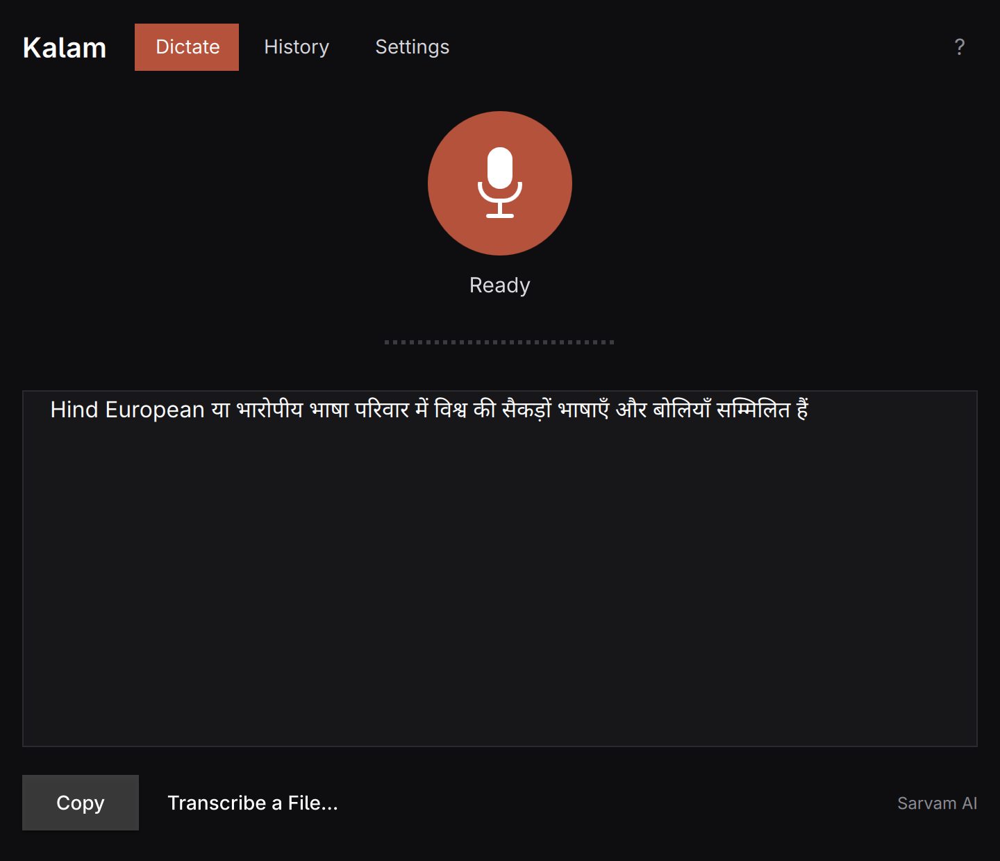
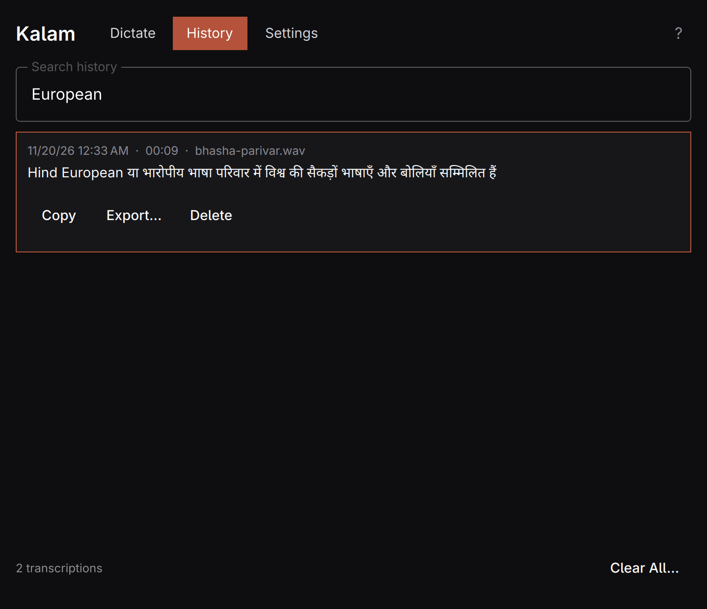
The transcript is Sarvam AI's output for a sentence from a spoken Hindi Wikipedia article (Magicalsaumy, CC BY-SA 3.0).
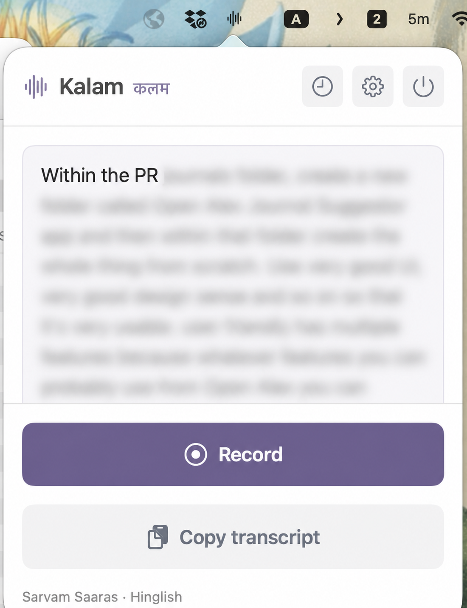
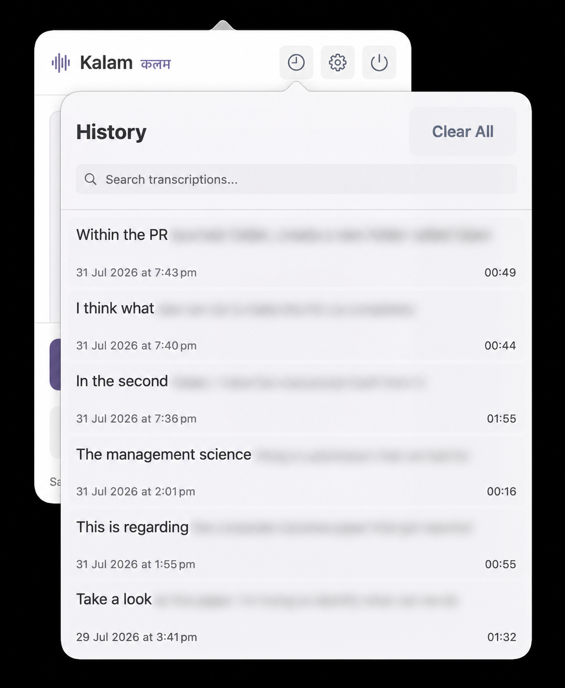
Transcript content is intentionally blurred in these public screenshots.
Optional Sarvam AI engine (Saaras v3) covers Hindi, Tamil, Telugu, Bengali, Marathi, and 17 more — including code-mixed Hinglish. Local Whisper Large Turbo covers offline use.
The default local engine keeps your voice on your Mac. The cloud engine is opt-in and clearly labeled.
Choose Local Whisper and nothing leaves your machine. Sarvam AI is the default on Linux and is clearly labeled as cloud; your key lives in the keyring.
Tap Cmd+Shift+Space to toggle, or hold it like a walkie-talkie. Works from any app.
Press Alt+Space to toggle, or hold Alt+Right Alt like a walkie-talkie. Works from any app.
Text appears at your cursor and copies to clipboard. Auto-stops after silence so nothing runs away.
Teach it names, acronyms, and course codes once — every transcript comes out right.
Drop WAV, MP3, M4A, AAC, AIFF, CAF, FLAC, Ogg/Opus, MP4, or QuickTime files onto the menu bar icon. Kalam extracts the audio, uses your selected engine, copies the result, and saves it in searchable History.
Drop an audio or video file on the window, or run kalam transcribe file.mp3 in a terminal. Kalam extracts the audio, uses your selected engine, and saves the result in searchable History.
Add your Sarvam key, then dictate from anywhere. Kalam sits in the Omarchy bar and shows what it is doing.
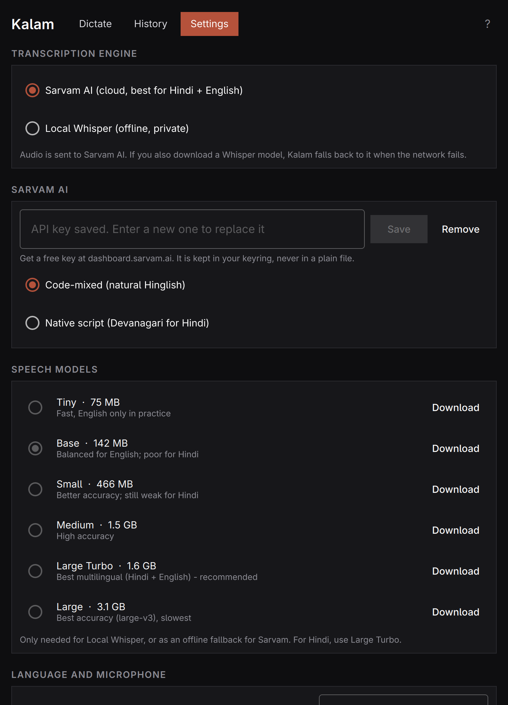
Sarvam AI is the default engine. Paste a free key from dashboard.sarvam.ai and pick code-mixed or native script. Whisper models are optional and download only when you ask.
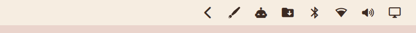
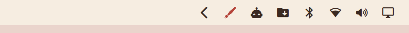
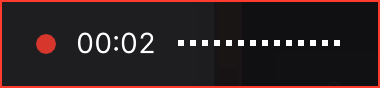
The pen in the Omarchy bar changes colour while recording, and a pill at the bottom of the screen shows the timer and your voice level. Click the pen to open Kalam; right-click it to dictate.
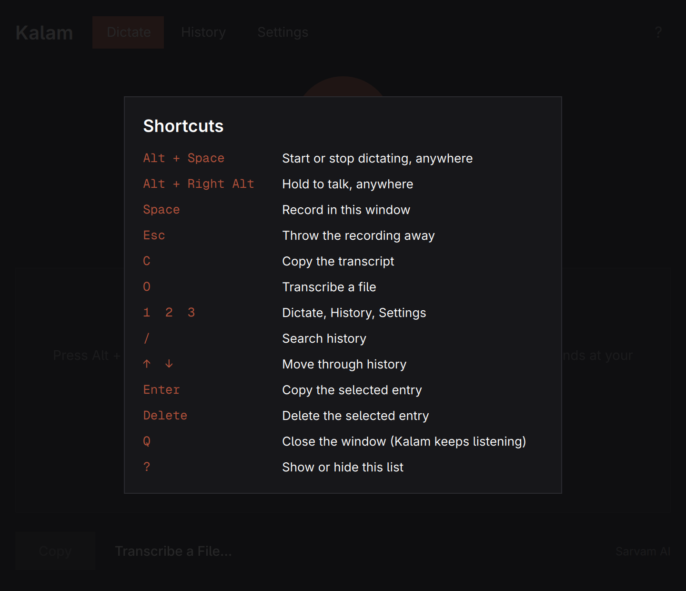
Every action has a key. Press ? in the window to see them all.
Choose how Kalam transcribes, keep a local fallback ready, and make the shortcut available whenever you need it.
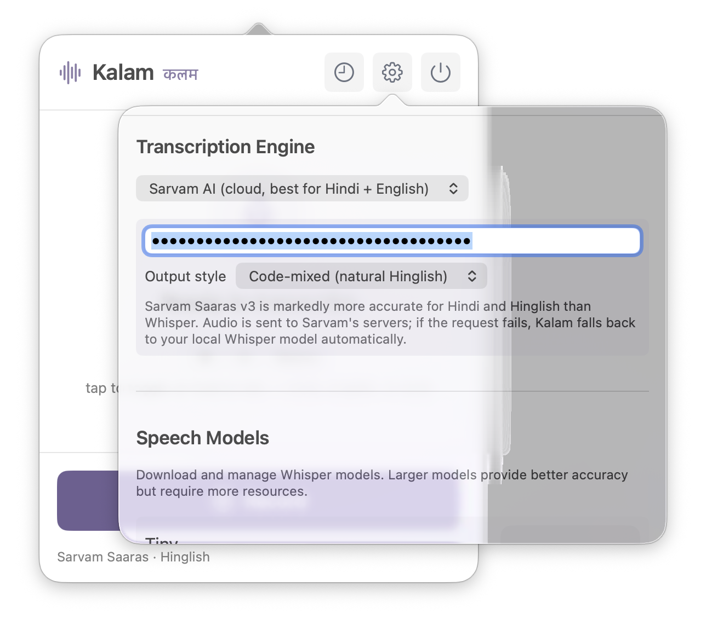
Stay offline with local Whisper, or add a Sarvam API key for stronger Hindi and Hinglish transcription.
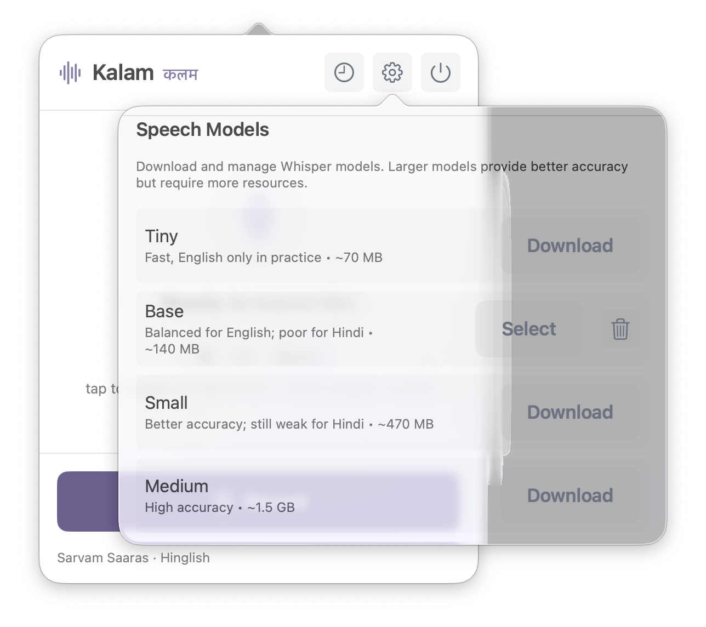
Use Base for compact English dictation or Large Turbo for multilingual local use and cloud fallback.
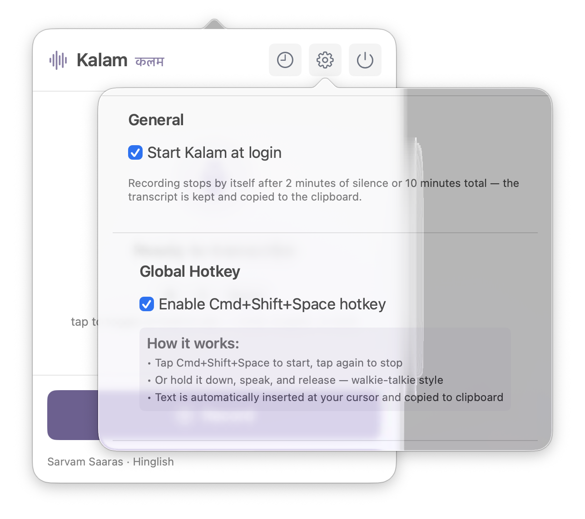
Start Kalam at login and leave the global hotkey enabled for dictation from any app.
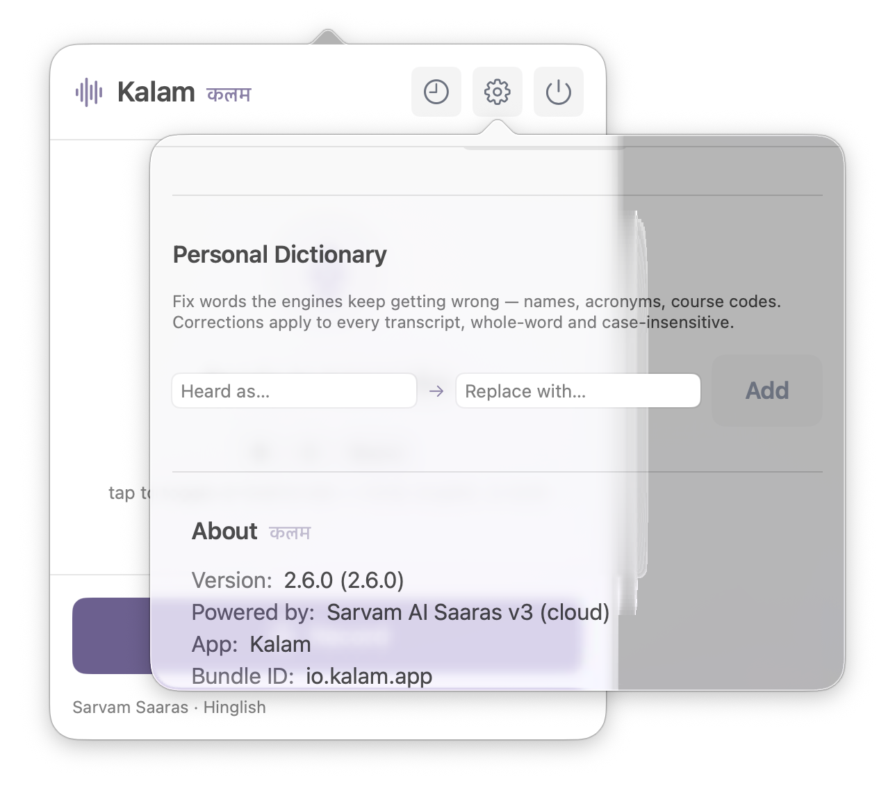
Add names, acronyms, and specialist terms once so future transcripts use the right spelling.
Kalam for Linux is built from source as an Arch package. Run this in a terminal:
git clone https://github.com/harshvardhaniimi/kalam.git && cd kalam && linux/bin/install
Then make Kalam your dictation keys and add it to the bar:
omarchy-install-dictation-kalam
Run git pull and linux/bin/install again to update. Your settings, key, and History are kept.
To stop using Kalam and remove it:
omarchy-remove-dictation-kalam && sudo pacman -Rns kalam
Run this in Terminal:
curl -sL https://raw.githubusercontent.com/harshvardhaniimi/kalam/main/install.sh | bash
Run the same command again to update to the latest release. Your settings, models, and History are preserved.
After the first installation, right-click the app in Applications → "Open" once.
xattr -cr /Applications/Kalam.appTo completely remove Kalam:
curl -sL https://raw.githubusercontent.com/harshvardhaniimi/kalam/main/uninstall.sh | bash